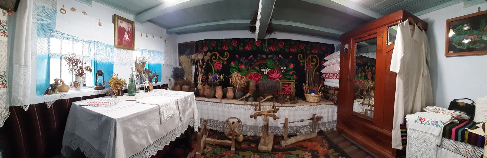
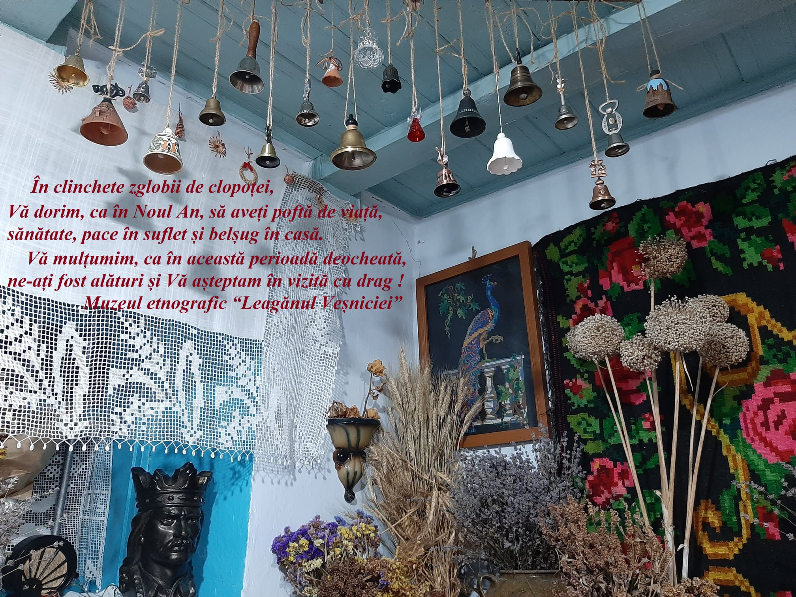
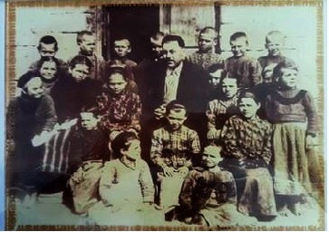

Colecții
Actualmente, patrimoniul muzeului este de o reală valoare istorică, documentară și artistică. Fondul de bază al muzeului se constituie din:
- piese
- documente
- cărți vechi
- obiecte și inventar de uz personal
- Artă decorativă
- piese de mobilier
- Diverse
Colecția de clopoței
1990 In aceasta fotografie sânt colectați cloptei din diferite vremuri folosite in perioada sărbătorilor de iarnă.
Elevi anilor 1929-1930
1930 In aceasta fotografie sânt elevii de altă dată, născuți între anii 1927-1930, împreună cu Dl.Birliba, directorul școlii din satul Grătiești.